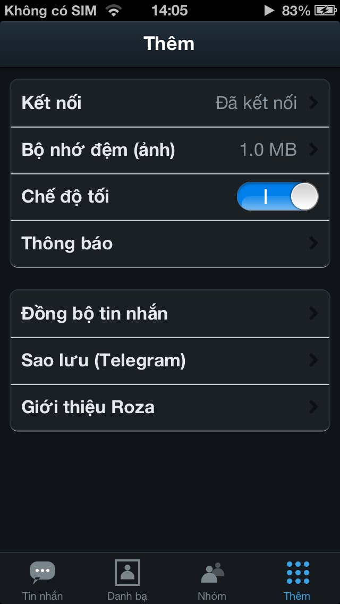

Roza
Nhắn tin Zalo trên iPhone / iPad chạy iOS 5 và iOS 6 đã jailbreak — giao diện iOS 6, nhẹ, lõi Rust.
Bản 1.4.0Nguồn Cydia: https://itovn.github.io/Roza/cydia/
Giao diện
 Đăng nhập bằng mã QR
Đăng nhập bằng mã QR Màn chat (chế độ tối)
Màn chat (chế độ tối)
Thẻ ThêmẢnh chụp trên iPhone 5 (iOS 6). Mã QR đã làm mờ, hàng thông tin tài khoản đã bỏ ra.
Tính năng
Giao diện kính, nhiều tài khoản, khoá app (mới)Thanh menu nổi tự thu gọn khi cuộn, menu nhấn giữ có thả cảm xúc, chip lọc chat. Thêm tài khoản Zalo khác trên cùng máy và chuyển qua lại. Khoá Roza bằng mật mã 4 số. Emoji mới hiện đúng (ảnh Twemoji). Chế độ tiết kiệm pin.
Gọi thoạiGọi và nghe cuộc gọi Zalo 1-1. Khi Roza chạy nền, cuộc gọi đến hiện như cuộc gọi SIM: màn khoá tự sáng với «trượt để trả lời», nhạc chuông theo iPhone, cuộc gọi được ghi vào Điện thoại → Gần đây.
Chat riêng và nhómTin chữ, trả lời (trích dẫn), thu hồi, xoá ở phía mình, thả cảm xúc, «Đã xem», «đang soạn tin…»; ghim chat, tắt thông báo, số chưa đọc; tìm chat ngay trên thanh trên.
StickerSticker của Zalo, cả sticker động chạy ngay trong chat; sticker gần đây, tìm sticker theo từ khoá.
Ảnh, video, tệp, tin nhắn thoạiGửi ảnh / video từ thư viện hoặc máy ảnh (video tự nén), gửi tệp, ghi âm tin thoại; xem ảnh, phát video và tin thoại. Lưu ảnh / video vào Ảnh, tệp vào Tài liệu, hoặc «Mở bằng app khác…».
Thông báo tin mớiKhi app ở nền; số chưa đọc trên biểu tượng; bỏ qua chat đã tắt thông báo (trừ khi có người nhắc @ tới bạn).
Đồng bộ với điện thoại, PCTin gửi / nhận trên Zalo ở điện thoại hoặc PC hiện ngay trên Roza; đọc ở máy khác thì Roza cũng bỏ số chưa đọc; lấy lại tin bị lỡ khi mất mạng; tải lịch sử nhóm.
Sao lưu lên TelegramSao lưu tin nhắn (cả ảnh, video, tệp nếu muốn) vào chat với bot Telegram của riêng bạn; khôi phục trên máy mới. Không gửi phiên đăng nhập Zalo đi đâu.
Trò chuyện ẩnẨn chat bằng mã PIN 4 số, dùng chung với app Zalo trên điện thoại; thông báo của chat ẩn không lộ tên và nội dung.
Nhắc hẹnTạo nhắc hẹn trong chat (một lần, hằng ngày / tuần / tháng); đồng bộ với Zalo nên cả hai bên đều thấy; Roza báo trên máy đúng giờ.
Vị tríGửi vị trí hiện tại hoặc chọn trên bản đồ (OpenStreetMap, có địa chỉ tiếng Việt); chạm vị trí trong chat để xem bản đồ.
Chuyển khoản bằng mã QRTạo mã VietQR có sẵn số tiền, nội dung — app ngân hàng nào cũng quét được; gửi thẻ tài khoản ngân hàng như Zalo; xem mã QR, chép số tài khoản từ thẻ người khác gửi.
Tin nhắn nhanhGõ «/» trong ô nhập để chèn câu hay dùng; đồng bộ với tin nhắn nhanh của Zalo trên điện thoại.
Danh thiếp, tên gợi nhớGửi danh thiếp bạn bè, chạm danh thiếp để nhắn tin ngay; đặt tên riêng cho bất kỳ ai (cả người chưa kết bạn), đồng bộ với điện thoại.
Lưu vào TelegramChạm giữ một tin → lưu chữ, ảnh, video, tệp (bản gốc) vào chat với bot Telegram của bạn.
Chế độ tốiGiao diện iOS 6 sáng hoặc tối, đổi ngay trong thẻ Thêm.
iPad: màn chia đôiDanh sách chat bên trái, cuộc trò chuyện bên phải — cả chiều dọc và ngang, như app Tin nhắn trên iPad.
Không qua máy chủ trung gianLõi Rust nói chuyện thẳng với máy chủ Zalo như Zalo Web; phiên đăng nhập và tin nhắn chỉ nằm trên máy của bạn. Mã nguồn mở.
Mục lục hướng dẫn
Cài đặt
1. Thêm nguồn CydiaMở Cydia → Nguồn → Sửa → Thêm, nhập
https://itovn.github.io/Roza/cydia/ rồi «Thêm nguồn». Hoặc mở trang này bằng Safari trên máy và chạm nút «Thêm nguồn vào Cydia» ở trên.2. Cài RozaTrong nguồn vừa thêm, chọn «Roza» → Cài đặt → Xác nhận. Cài xong bấm Restart SpringBoard — cần một lần để Roza có mục trong Cài đặt → Thông báo.
3. Mở Roza và đăng nhậpQuét mã QR bằng app Zalo trên điện thoại khác (xem mục dưới). Lần đầu iOS hỏi quyền gửi thông báo: chọn «OK».
Cài bằng tệp .debTải tệp ở trang Releases, chép vào máy rồi cài bằng iFile, hoặc qua SSH:
dpkg -i vn.roza.app_1.4.0_iphoneos-arm.deb rồi killall SpringBoard. Cần có gói MobileSubstrate.Cập nhậtBản mới phát hành qua nguồn Cydia: Cydia → Thay đổi → Làm mới → Nâng cấp.
Đăng nhập bằng mã QR
Roza đăng nhập giống Zalo Web, nên cần một điện thoại khác đã đăng nhập tài khoản Zalo của bạn (app Zalo bản mới trên Android / iPhone).
- Mở Roza: màn hình hiện mã QR.
- Trên điện thoại kia, mở app Zalo → chạm nút quét mã QR (góc trên, cạnh ô tìm kiếm).
- Quét mã trên Roza → điện thoại hỏi xác nhận → chạm Đăng nhập.
- Roza tải danh sách chat, danh bạ, nhóm — vài giây là dùng được.
Mã QR chỉ dùng được khoảng 100 giây; hết hạn thì chạm «Lấy mã mới». Phiên đăng nhập lưu trên máy (quyền chỉ app đọc được), mở lại app không phải quét lại. Với Zalo, Roza là một phiên Zalo Web: đăng xuất Zalo Web từ điện thoại thì Roza báo «Cần đăng nhập lại».
Chỉ một Zalo Web cùng lúc
Zalo chỉ giữ một kết nối Zalo Web cho mỗi phiên. Nếu bạn mở chat.zalo.me trên trình duyệt (hoặc dùng Roza trên máy thứ hai), Roza sẽ báo «Zalo Web đang mở ở nơi khác» và ngừng nhận tin. Chạm «Dùng ở đây» để lấy lại kết nối cho Roza.
Mỗi máy nên tự đăng nhập bằng mã QR riêng; đừng chép tệp phiên giữa các máy — hai máy dùng chung một phiên sẽ liên tục đá kết nối của nhau.
Thông báo tin mới
Roza giữ kết nối với Zalo khi chạy nền (chế độ VoIP của iOS), iOS đánh thức app khi có tin để báo.
- Sau khi cài lần đầu, bấm Restart SpringBoard (tweak RZNotify đi kèm giúp Roza có mục trong Cài đặt → Thông báo).
- Lần đầu mở Roza, chọn OK khi iOS hỏi quyền gửi thông báo.
- Chỉnh trong Roza → Thêm → Thông báo: hiện thông báo, xem trước nội dung, âm thanh, số trên biểu tượng app.
- Kiểu hiển thị (biểu ngữ / cảnh báo, màn hình khoá): Cài đặt của iOS → Thông báo → Roza.
Không thấy thông báo? Kiểm tra Cài đặt → Thông báo → Roza đang bật; đừng tắt hẳn Roza khỏi thanh đa nhiệm; Wi-Fi / 3G phải có mạng. Chat đã tắt thông báo thì không báo, trừ khi có người nhắc @ tới bạn. Tắt «Xem trước nội dung» thì thông báo chỉ ghi «Tin nhắn mới».
Gửi và lưu ảnh, video, tệp
GửiTrong chat, chạm + để chọn ảnh, video (từ thư viện hoặc chụp mới) hoặc tệp; chạm hình mặt cười để chọn sticker; chạm nút micro rồi giữ nút ghi âm để nói, thả tay là gửi tin thoại.
Lưu về máyChạm giữ tin có ảnh / video / tệp → «Lưu về máy»: ảnh và video vào thư viện Ảnh (GIF vẫn động), tệp vào thư mục Tài liệu/Roza. Chọn «Mở bằng app khác…» để mở tệp bằng app khác trên máy.
Đồng bộ tin nhắn
Khi Roza đang kết nối, tin bạn gửi / nhận ở Zalo trên điện thoại hoặc PC tự hiện trên Roza. Màn Thêm → Đồng bộ tin nhắn cho xem trạng thái và có hai nút:
- Lấy lại tin bị lỡ — hỏi máy chủ Zalo các tin gần đây và tin bị lỡ lúc Roza tắt / mất mạng.
- Tải lịch sử tất cả nhóm — tải tối đa 300 tin gần nhất của mỗi nhóm.
Giới hạn của Zalo Web: lịch sử chat riêng từ trước khi đăng nhập Roza chỉ nằm trên điện thoại, Zalo chưa cho Zalo Web tải về. Một số nhóm không cho xem tin cũ (nhóm tắt «thành viên mới xem tin cũ», hoặc Zalo hạn chế) — màn Đồng bộ ghi rõ lý do từng nhóm. Muốn giữ tin trên Roza khi đổi máy, dùng sao lưu Telegram.
Sao lưu và khôi phục qua Telegram
Bản sao lưu nằm trong chat giữa bạn và một bot Telegram do chính bạn tạo, không qua máy chủ nào khác.
- Mở Telegram, nhắn cho @BotFather lệnh
/newbot, đặt tên cho bot → BotFather gửi lại token (dạng123456789:AA…). - Mở chat với bot vừa tạo, gửi
/start. - Trong Roza: Thêm → Sao lưu (Telegram) → «Nhập token», dán token → bấm Tìm chat.
- Bấm Sao lưu ngay. Bản sao lưu (đã nén) được gửi và ghim trong chat với bot.
- Tuỳ chọn: Tự sao lưu mỗi ngày; Sao lưu cả ảnh, video, tệp (tệp lớn tự chia phần ≤ 19 MB).
Khôi phục trên máy mớiCài Roza, đăng nhập bằng mã QR, vào Thêm → Sao lưu (Telegram), dán cùng token → Tìm chat → Khôi phục từ bản mới nhất. Tin nhắn trên máy được thay bằng bản sao lưu; ảnh / video / tệp đã sao lưu được lấy lại từ Telegram khi bạn mở chúng.
Bản sao lưu gồm tin nhắn, danh bạ, nhóm — không gồm phiên đăng nhập Zalo. Giữ kín token: ai có token đều đọc được bản sao lưu trong chat với bot.
Trò chuyện ẩn
Giống app Zalo: danh sách chat ẩn và mã PIN lưu trên tài khoản, nên chat ẩn trên điện thoại cũng ẩn trên Roza và ngược lại.
- Ẩn: vuốt sang trái trên một chat → «Ẩn». Lần đầu chưa có PIN thì đặt PIN 4 số (nhập hai lần).
- Xem: gõ đúng PIN vào ô tìm kiếm của danh sách chat, hoặc Thêm → Trò chuyện ẩn → nhập PIN.
- Bỏ ẩn: trong danh sách chat ẩn, vuốt sang trái → «Bỏ ẩn».
Thông báo của chat ẩn chỉ ghi «Roza: Bạn có tin nhắn mới».
Nhắc hẹn, vị trí, chuyển khoản và các tiện ích khác
Trong một cuộc trò chuyện, chạm + cạnh ô nhập tin:
- Vị trí — lần đầu iOS hỏi quyền định vị: chọn «OK». Kéo bản đồ để chọn chỗ khác rồi «Gửi vị trí này». Người nhận chạm đường dẫn để mở bản đồ.
- Danh thiếp — chọn một người trong danh bạ.
- Tài khoản ngân hàng — chọn ngân hàng, nhập số tài khoản, tên chủ tài khoản (hoặc chạm một tài khoản đã lưu trong Zalo) → «Gửi».
- Mã QR chuyển khoản — như trên, thêm số tiền và nội dung → Roza gửi ảnh mã VietQR kèm tin ghi số tài khoản. Người nhận quét bằng app ngân hàng là chuyển đúng số tiền.
- Nhắc hẹn — chạm + để tạo: nội dung, ngày giờ, lặp lại. Người kia cũng thấy nhắc hẹn.
- Tin nhắn nhanh — chọn câu đã lưu; hoặc gõ «/» ngay trong ô nhập.
Thẻ tài khoản người khác gửiChạm vào thẻ → xem mã QR (nhập số tiền để có mã kèm số tiền), chép số tài khoản, hoặc lưu ảnh mã vào máy để quét bằng app ngân hàng.
Tên gợi nhớChạm tên trên thanh trên của màn chat → «Đặt tên gợi nhớ…», hoặc chạm giữ một người trong Danh bạ. Để trống để bỏ tên gợi nhớ.
Lưu vào TelegramNối bot ở Thêm → Sao lưu (Telegram) trước (xem mục sao lưu ở trên). Sau đó chạm giữ một tin → «Lưu vào Telegram».
Gọi thoại
Gọi điMở một cuộc trò chuyện riêng, chạm nút ống nghe ở góc phải thanh trên. Trong lúc gọi: Loa ngoài, Tắt micro, Kết thúc. Áp máy lên tai thì màn hình tự tắt.
Cuộc gọi đếnRoza đang mở: hiện màn cuộc gọi của Roza. Roza chạy nền: hiện như cuộc gọi SIM — đang dùng máy thì có nút Từ chối / Trả lời, máy khoá thì màn tự sáng với «trượt để trả lời» (máy có mật mã thì nhập mật mã để vào cuộc gọi). Nhạc chuông theo nhạc chuông của iPhone; công tắc im lặng thì chỉ rung.
Tuỳ chọnThêm → Thông báo → Cuộc gọi: Nhạc chuông, Cuộc gọi đến kiểu hệ thống, Ghi vào Gần đây (app Điện thoại), Tự mở lại khi bị tắt.
Lưu ýĐể nhận được cuộc gọi đến, Roza khai phiên đăng nhập là Zalo PC — nếu tài khoản đang đăng nhập Zalo PC trên máy tính, máy tính đó có thể bị đăng xuất. Chưa có gọi video và gọi nhóm.
Hỏi đáp
Roza có phải app của Zalo?Không. Roza là ứng dụng không chính thức, đăng nhập và nhắn tin qua cùng giao thức với Zalo Web. Tên, biểu tượng, hình ảnh trong app đều tự vẽ. Dùng ứng dụng không chính thức là lựa chọn của bạn.
Tin nhắn có đi qua máy chủ nào khác?Không. Roza kết nối thẳng tới máy chủ Zalo; phiên đăng nhập và tin nhắn lưu trong máy (
/var/mobile/Library/Roza). Chỉ khi bạn bật sao lưu thì dữ liệu mới được gửi tới bot Telegram của chính bạn.Gọi thoại / video được không?Chưa. Roza dành cho nhắn tin.
iPad dùng được không?Được (iPad 1 – 4, iPad mini 1). Từ bản 1.1.0 iPad có màn chia đôi: danh sách chat bên trái, cuộc trò chuyện bên phải, xoay dọc hay ngang đều được.
Bản đồ lấy từ đâu?Từ OpenStreetMap (© những người đóng góp OpenStreetMap) — bản đồ có sẵn của iOS 5 / 6 không còn dùng được. Địa chỉ tra bằng Nominatim của OpenStreetMap.
Đăng xuất, gỡ cài đặtThêm → Đăng xuất: xoá phiên và tin nhắn đã lưu trên máy. Gỡ app: Cydia → Đã cài đặt → Roza → Sửa đổi → Gỡ bỏ.
Báo lỗi, góp ýGitHub Issues hoặc nhóm Telegram t.me/tivikit. Khi báo lỗi, ghi rõ máy, bản iOS và cách làm để gặp lỗi.
Máy chạy được
iOS 5.0 – 6.1.x đã jailbreak (cần MobileSubstrate): iPhone 4, 4S, 5 · iPad 1, 2, 3, 4, mini 1 · iPod touch 4, 5. Đã chạy thử trên iPhone 5 (iOS 6.1.4), iPad mini 1 (iOS 6.1.3), iPad 1 (iOS 5.1.1).
Mã nguồn
Mã nguồn mở — GPL-3.0github.com/itovn/Roza · lõi Rust (giao thức chuyển từ thư viện zca-js, MIT), giao diện Objective-C / UIKit dựng bằng Theos.
Roza là ứng dụng không chính thức, đăng nhập như Zalo Web; không phải sản phẩm của Zalo / VNG.
Zalo là nhãn hiệu của chủ sở hữu tương ứng.
Zalo là nhãn hiệu của chủ sở hữu tương ứng.